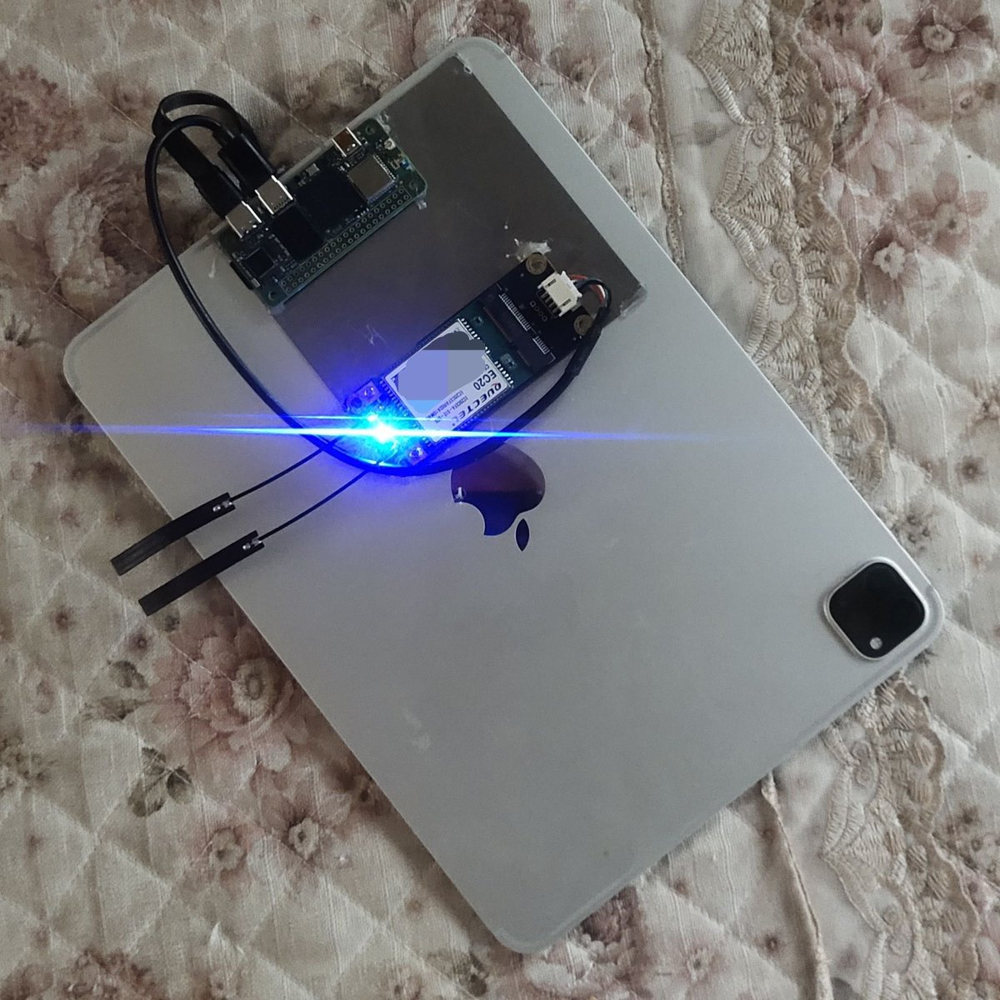

小虚空🍥
@tokerumaisurii
@Cyniton 好强……

Cyniton
@Cyniton
算是个原型吧
使用raxda zero3w，来自咸鱼的ec20cefa和官方的转接版。
目前实现的：
- 使用流量开5g热点
- 收发短信（使用gammu）
- （如果你看不出来）磁吸固定，ipad供电
计划中：
-更好的功耗控制（1.5w常驻对续航的影响太恐怖了）
-clash 透明代理（ios代理软件没一个免费的）
-voip
-内网小服务? https://t.co/gcNj2KUB4c https://t.co/jQZKlXXDdL